금속재료기사 (2012-05-20 기출문제)
1과목: 금속조직학
1. 다음 중 금속재료를 냉간가공한 후 어닐링 처리를 행 할때 일어나는 회복과정에 관련된 내용이 아닌 것은?
- 경도의 감소
- 전위밀도의 감소
- 전기전도도의 증가
- 결정립 형상의 변화
(정답률: 77%)

2. Fe-C 평형상태도에서 나타날 수 있는 반응이 아닌 것은?
- 공정반응
- 포정반응
- 재융반응
- 공석반응
(정답률: 89%)
3. 금속의 강화기구 중 저온과 고온에서 모두 유용한 강화 방법은?
- 가공강화
- 석출강화
- 고용체 강화
- 마텐자이트 강화
(정답률: 72%)
4. 면십입방격자에서 격자상수를 a 라할 때 원자반경(r)을 구하는식으로 옳은 것은?
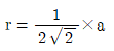
- r=√2×a
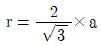
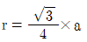
(정답률: 73%)
5. 다음 조직중 연성이 가장 좋은 것은?
- 마텐자이트
- 페라이트
- 펄라이트
- 베이나이트
(정답률: 83%)
6. 다음 중 과공석강을 서냉할 때 얻어지는 조직은?
- 페라이트
- 마텐자이트
- 초석페라이트+펄라이트
- 초석시멘타이트+펄라이트
(정답률: 85%)
7. 순철의 A3 동소변태 온도는 약 몇도(℃)인가?
- 210
- 723
- 910
- 1536
(정답률: 88%)
8. FCC 금속에서 쇼클리 부분전위가 생성되면 어떤 결정구조로 바뀔 수 있는가?
- BCC
- BCT
- FCT
- HCP
(정답률: 80%)
9. 원자 배열이 어느 축을 경계로 전혀 반대의 배열을 갖는 것을 무엇이라 하는가?
- 역위상
- 결정립계
- 단범위규칙도
- 장범위규칙도
(정답률: 91%)
10. 공석강을 오스테나이트화(Austenitezation)한 다음 급냉하여 마텐자이트조직을 얻었을 때 치수 변화는?
- 감소한다.
- 증가한다.
- 일정하지 않다
- 변화하지 않는다.
(정답률: 77%)
11. Bravais 결정계 중 정방정계(tetragonal)의 격자 상수와 축각을 옳게 나타낸 것은?
- 격자상수 a=b≠c, 축각 α=β=γ=90°
- 격자상수 a=b=c, 축각 α=β=γ≠90°
- 격자상수 a≠b≠c, 축각 α=β=90°, γ≠90°
- 격자상수 a=b≠c, 축각 α=β=90°, γ=120°
(정답률: 83%)
12. 가공변형이 전혀 없는 상태 즉 완전어닐링 상태에서 금속결정 내의 전위 밀도는 약 얼마인가?
- 103∼105개/cm2
- 106~108개/cm2
- 109∼1011개/cm2
- 1012∼1014개/cm2
(정답률: 83%)
13. 다음 그림에서 P 조성 합금중의 B성분의 양은?
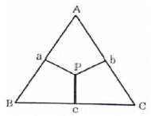
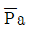
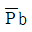
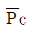
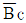
(정답률: 87%)
14. 고온의 불규칙 상태의 고용체를 천천히 냉각하면 어느 온도에서 규칙격자가 형성되기 시작하는 이온도의 명칭은?
- 규칙온도
- 불규칙온도
- 천이온도
- 변형온도
(정답률: 86%)
15. 비정질(amorphous)이란 원자가 규칙적으로 배열하지 않은 상태를 말하는데 비정질이 아닌 것은?
- 유리금속
- 무정형
- 비결정
- 규칙계
(정답률: 85%)
16. 일반적으로 재료내부에는 재료의 특성과 주어진 조건(온도,압력등)에 따르는 평형결함 농도가 존재한다. 평형결함 농도이상의 결함이 존재할 때 관찰되는 현상이 아닌 것은?
- 전기저항의 증가
- 탄성계수의 증가
- 열전도도의 감소
- 기계적 성질의 향상
(정답률: 70%)
17. 금속용액을 냉각할 때 나타나는 입내편석에 대한 설명 중 틀린 것은?
- 입내편석을 예방하려면 아주 천천히 냉각해야 한다.
- 확산현상이 없이 급냉되면 입내편석은 많이 발생한다.
- 융액은 온도강하에 따라 응고하면서 고체 결정의 농도차가 발생되어 입내편석이 일어난다.
- 최초 결정핵과 최종 응고부의 농도차이가 크면 동일 결정립내라도 입내편석이 일어나지 않는다.
(정답률: 79%)
18. 다음의 밀러지수 중 면간 거리가 가장 가까운 것은?
- (010)
- (120)
- (220)
- (130)
(정답률: 82%)
19. 순금속을 용융상태에서 냉각하면 융점온도에서 일정시간 동안 시간이 지나도 온도가 변화되지 않는 수평 상태를 유지하다가 다시 시간에 따라 온도가 감소한다. Gibbs의 상률을 이용하면 융점 수평구간에서의 자유도(F)는 얼마인가?
- 0
- 1
- 2
- 3
(정답률: 78%)
20. 다음 원소 중 강에서 침입형 원자가 될 수 있는 것은?
- Ni
- B
- Cr
- Al
(정답률: 80%)
2과목: 금속재료학
21. Fe-C상태도에서 탄소 함유량이 0.6%인 아공석강의 A1변태점직상에서 초석 페라이트의 양은 약 몇%인가? (단, α의 탄소함량은 0.025%이며, 공석점에서의 탄소함량은 0.8%이다.)
- 26
- 36
- 46
- 56
(정답률: 73%)
22. 절삭성을 높이기 위한 쾌삭 황동(hard brass)은 황동에 어떤 원소를 1.0~3.5% 정도 첨가시킨 합금인가?
- P
- Si
- Sb
- Pb
(정답률: 75%)
23. Cu에 Ni을 40~50%정도 첨가한 것으로서 열전쌍(thermocouple)으로 사용되는 재료는?
- 니크롬(Nichrome)
- 인코넬(Inconel)
- 콘스탄탄(Constantan)
- 모넬 메탈(Monel metal)
(정답률: 79%)
24. 기계구조용 강에 대한 설명으로 틀린 것은?
- 마레이징(Maraging) 강은 극저탄소 마텐자이트를 시효 석출시킨 강재이다.
- 스프링용 강은 2.0%~2.5%C의 고탄소강이 많이 사용된다.
- 초강인강이란 인장강도 140kg/mm2이상, 항복점120kgf/mm2이상의 강을 말한다.
- Cr-Mo 강은 Cr강보다 담금질성을 향상하고, 뜨임저항성이 크며 또한 뜨임취성이 작은 강이다.
(정답률: 70%)
25. 연강과 같이 항복점이 있는 금속의 응력-변형률 곡선에서 항복점 연신과정에 나타나는 띠(band)가 아닌 것은?
- 루더스 밴드
- 슬립밴드
- 핼트먼선
- 코트렐 밴드
(정답률: 59%)
26. 다음 중 부식 예방법으로서 음극보호(cathodic protection) 방법이 아닌 것은?
- 지하배관용 강관에 마그네슘 희생양극(sacrifi cialanode) 을 설치한다.
- 지하탱크에 외부전압(impressed voItage)을 가하여 보호한다.
- 통조림용 캔 재료로 주석도금(tin plating)한 강판을 사용한다
- 자동차 차체용 재료로 아연도금(galvanizing)한 강판을 사용한다.
(정답률: 69%)
27. 탄소강에서 망간(Mn)의 영향으로 옳은 것은?
- 결정립의 크기를 증가시키고 소성을 감소시킨다.
- 고온에서 결정립 성장을 억제시킨다.
- 강의 유동성을 나쁘게 한다.
- 저온취성의 원인이 된다.
(정답률: 74%)
28. 스프링용 인청동을 냉간가공한 후 225 ~ 275℃에서 1시간정도 저온 풀림 처리하는 이유로 옳은 것은?
- 단단한 인동(Cu3P)이 석출되어 탄성한도가 낮게되고 인성피로가 개선되기 때문이다.
- 주석화합물(δ-상)이 석출되어 탄성한도가 높게 되고 취성피로가 개선되기 때문이다.
- 자성(滋性)이 증가하여 너트, 볼트 등의 연성재료로 사용할 수 있기 때문이다.
- 내부마찰(internal friction)이 작아져 탄성한도가 높게되어 탄성피로가 개선되기 때문이다.
(정답률: 67%)
29. 경질 합금의 소결 고온압착법(Hot Press Method)에 대한 설명으로 틀린 것은?
- 완성치수와 가까운 형상의 것을 얻을 수 있다.
- 로내에서 1개씩 소결되므로 다량 생산방식을 사용할 수 없다.
- 소결온도와 압력을 잘못 조절하면 액상이 주위에 배어나와 편석을 일으킨다.
- 조직이 조대하고 경도는 향상되며, 상온에서 압착한 소결체보다 표면조도가 낮다.
(정답률: 73%)
30. 열간금형용 합금공구강에 대한 설명으로 틀린 것은?
- 내마모성이 크고 용착, 소착을 일으키지 않아야 한다.
- Heat checking은 C%가 높으면 잘 일어나지 않는다.
- Mo기 공구강은 담금질성 및 인성이 좋으나 탈탄을 일으키기 쉽다.
- 550°C 부근에서 뜨임하면 프레스형 강등은 2차 경화가 나타난다.
(정답률: 70%)
31. Ai-Si계 합금에 대한 설명으로 옳은 것은?
- 공정형이며, Al에 대한 Si의 용해도가 크므로 열처리 효과가 기대된다.
- 공정형이며, Al에 대한 Si의 용해도가 작으므로 열처리 효과를 기대할 수 없다.
- 포정형이며, Al에 대한 Si의 용해도는 크므로 열처리 효과가 기대된다.
- 포정형이며, Al에 대한 Si의 용해도는 작으므로 열처리 효과를 기대할 수 없다.
(정답률: 65%)
32. 구리를 진공 용해하여 0.001~0.002%의 O2 함량을 가지며 유리의 봉착성이 좋아 진공관용 재료 및 전자 기기등에 이용되는 재료는?
- 무산소동
- 탈산동
- 전기동
- 정련동
(정답률: 85%)
33. 다음 중 합금 및 고용강화에 관한 일반적인 설명으로 틀린 것은?
- 합금의 항복강도, 인장강도, 경도는 순수한 금속보다 더 큰편이다.
- 대부분의 합금은 순수한 금속보다 연성이 낮다.
- 합금의 전기 전도도는 순수한 금속보다 훨씬 크다.
- 크리프에 대한 저항성 또는 고온에서의 강도 저하는 고용강화에 의해 향상되는 경향이 있다.
(정답률: 75%)
34. 아연(Zn)의 성질에 대한 설명으로 틀린 것은?
- 주조상태에서 미세결정구조이며, 상온 가공이 가능하다.
- 25°C에서 밀도는 약7.13g/cm3이다.
- 용융점은 약 420°C 정도이며, 조밀육방격자이다.
- 황동 합금이나 다이캐스팅용에 이용된다.
(정답률: 62%)
35. 수소 저장성을 활용하여 자동차연료용이나 연료전지의 발전용으로 활용이 가능한 합금은?
- Fe-Ni계
- Mn-Cu계
- Nb-Ti계
- Ti-Ni계
(정답률: 73%)
36. 스테인리스강에 대한 설명으로 틀린 것은?
- Cr과 Ni은 스테인리스강의 기본적인 합금원소이다.
- 오스테나이트계 스테인리스강은 자성이 강하다.
- 조직에 따라서 오스테나이트계, 마텐자이트계, 페라이트계, 석출경화계 스테인리스강으로 분류한다.
- 탄화물(Cr23C6)은 오스테나이트입계에 석출하여 입계부식의 원인이 된다.
(정답률: 79%)
37. 비커즈 경도시험에 관한 설명으로 틀린 것은?
- 미소 경도 시험으로 표면 경화층, 탈탄이나 도금부위 등을 측정 할 수 있다.
- 미소 경도 시험은 금속의 단결정이나 특정 조직부분을 측정 할 수 있다.
- 다이아몬드 피라미드의 중심축과 누르개 부착축(부착면의수직방향) 사이의 각도는 0.3°보다 커야한다.
- 비커즈 경도계의 피라미드 꼭지각 대면각은 136°이다.
(정답률: 71%)
38. 섬유강화금속(FRM)의 특성이 아닌 것은?
- 비강도 및 비강성이 낮다.
- 2차 성형성 및 접합성이 있다.
- 섬유축 방향의 강도가 크다.
- 고온의 역학적 특성 및 열적안정성이 우수하다.
(정답률: 71%)
39. 구상흑연주철의 제조 시 첨가되는 구상화 첨가원소는?
- Mg, Ca
- Zn, Ag
- Sn, Cr
- Co, Cu
(정답률: 81%)
40. 배빗메탈(babbit metal)에 대한 설명으로 틀린 것은?
- 경도는 Pb를 주로 하는 합금보다 낮다.
- 충격과 진동에 잘 견딘다.
- 주석계 베어링 합금이라고도 한다.
- 비열이 작고 열전도도가 크므로 고속도, 대하중의 기계에 적합하다.
(정답률: 70%)
3과목: 야금공학
41. 다음의 열역학 관계식들 중 틀린 것은?
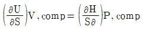
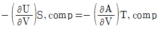
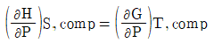
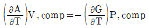
(정답률: 54%)
42. 열해리를 이용하여 금속을 만들 때 사용되는 금속 화합물은?
- Ni(CO)4, Fe(CO)5
- CaSO4, FeCO3
- MgCO3, WC
- Zn(OH)2, MoCO3
(정답률: 70%)
43. 다음 화학방정식 중에서 열화학 방정식은?
- H2+(1/2)O2=H2O+ΔE
- H2O = H2+(1/2)O2+ΔS
- H2+(1/2)O2=H2O+ΔH
- H2O = H2+(1/2)O2+R
(정답률: 73%)
44. 다음 중 규칙용액(regular solution)에 관한 설명으로 틀린 것은?
- 혼합열은 조성에 따라 다르다.
- 혼합엔트로피는 이상용액의 엔트로피와 같다.
- 혼합열이 0이다.
- 성분의 활동도 계수는 온도에 따라 변한다.
(정답률: 58%)
45. 열역학 제 3법칙에서 ΔS=0으로 정하는 기준 온도는?
- 0℃
- 0K
- 25℃
- 100℃
(정답률: 79%)
46. 깁스 자유에너지(Gibbs free energy(G))에 관한 설명으로 틀린 것은?
- 일정 온도, 일정 압력하에서 G가 감소하면 자발적인 과정이다.
- 상태 1과 상태 2의 양쪽 상태가 정해지면, 그과정의 경로에 상관없이 ΔG값은 동일하다.
- 일정 온도에서 이상기체가 압력 P1에서 압력 P2로 등온 팽창할때 ΔG값은 Helmholtz free energy 변화(ΔA)값과 같다.
- 평형상태에서 G가 최대값을 가진다.
(정답률: 79%)
47. 코크스가 가열된 공기에 의하여 완전 연소하여 CO가스를 생성한다고 할 때, 이론적인 CO가스의 조성(%)은? (단, 공기 중의 산소는 21%, 질소는 79%이다.)
- 21.0
- 34.7
- 42.0
- 65.3
(정답률: 62%)
48. 다음 중 고로에서 열 정산시 출열 항목이 아닌 것은?
- 산화철 환원열
- 송풍 현열
- 로정가스 현열
- 슬래그 현열
(정답률: 70%)
49. 압력P, 온도가 T인 1몰의 이상기체가 진공으로 등온 팽창하여 부피가 2배로 되었을때, ΔH, ΔS, ΔA, ΔG를 구한 것으로 틀린 것은? (단, H : 엔탈피, S : 엔트로피, A : 헬름홀츠 자유에너지, G: 깁스 자유 에너지이다.)
- ΔH =0
- ΔG =-RT∙n2
- ΔA =RT∙n2
- ΔS = R∙n(V2/V1) =R∙n2
(정답률: 59%)
50. 어떠한 반응이 자발적으로 진행되는 조건을 설명한 것 중 옳은 것은?
- 엔트로피(entropy)가 변화하지 않을 때
- 깁스 자유에너지가 증가할 때
- 엔트로피(entropy)가 감소할 때
- 깁스 자유에너지가 감소할 때
(정답률: 71%)
51. 어떠한 비정질 물질이 임계온도에서 비정질(amorphous) → 결정질(crystalline)반응에 의해 결정물질로 된다. 이 반응의 엔탈피 변화량 ΔH와 관련된 설명으로 옳은 것은?
- ΔH는 0이다.
- ΔH는 음수이다.
- ΔH는 양수이다.
- 물질에 따라 ΔH는 다르다.
(정답률: 67%)
52. 고로의 풍구(tuyere)에 연료를 취입하여 조업할 때 송풍온도와 산소부화율은 어떻게 조절하여야 하는가?
- 송풍온도는 낮추고 산소부화율은 높여야 한다.
- 송풍온도와 산소부화율을 모두 낮추어야 한다.
- 송풍온도는 높이고 산소부화율은 낮추어야 한다.
- 송풍온도와 산소부화율을 모두 높여야 한다.
(정답률: 68%)
53. 1몰 이상기체(Cv=1.5R)가 가역 단열 압축과정을 거쳐 상태 1(25°C, 1기압)에서 상태2(T2, 2기압)로 변할 때 엔탈피 변화(ΔH)는 약 몇 J인가?
- 2⑤7
- 1187
- 1979
- 1037
(정답률: 47%)
54. 선철 중에 함유되어 있는철(Fe) 이외의 5대 성분은?
- C, Si, Mn, P,Ti
- C, Si, Mn, P, S
- S, Si, Cu, P, S
- C, Si, Mn, Ti, Cr
(정답률: 81%)
55. 등온, 등압하에서 이상기체 혼합물을 형성할 때 다음 중 성립되지 않는 식은? (단, G : Gibbs자유에너지, S : 엔트로피, H : 엔탈피, V : 부피, Xi : i기체의 몰분율, n : 몰수, R : 기체상수, T : 절대온도이다.)
- △Gmix=nRT∑InX
- △Smix=nR∑XInXi
- △Hmix=0
- △Vmix=0
(정답률: 67%)
56. 돌로마이트(Dolomite)의 주성분은?
- CaO – MgO
- Al2O3 - SiO2
- CaO – SiO2
- CaF2
(정답률: 74%)
57. Mg-Si계 에서 Mg2Si 화합물 중 Mg의 중량백분율(%)은? (단, Mg의 원자량은 24.31이고, Si는 28.09이다.)
- 66.66
- 63.38
- 43.38
- 33.33
(정답률: 73%)
58. 1mole의 기체에 대한 반데르발스(VanderWaals) 상태 방정식은? (단, a 및 b는 상수, V는 부피, P는 압력, R은 기체상수, T는 절대온도를 표시한다.)
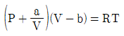
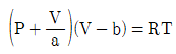
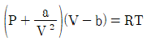
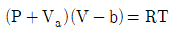
(정답률: 79%)
59. 일정한 압력하에서 온도가 올라감에 따라 평형상수가 증가하는 반응은?
- 발열반응이다.
- 흡열반응이다.
- 반응열이 0 이다.
- 단열반응이다.
(정답률: 78%)
60. Ni 스파이스(speiss)의 주요 조성으로 옳은 것은?
- Cu-Fe–Pi
- Pb–Ni-Si
- Fe–As–Ni
- Sb–S–Co
(정답률: 65%)
4과목: 금속가공학
61. 체심입방격자인 FCC(99.99%)의 슬립면과 슬립 방향으로 옳은 것은?
- {111}, <110>
- {110},

- {0001},

- {1010}, <2110>
(정답률: 78%)
62. 재료의 크리프(creep) 저항과 관련된 설명으로 틀린 것은?
- 융점이 높을수록 크리프 저항은 증가한다.
- 탄성계수가 클수록 크리프 저항은 증가한다.
- 활성화에너지가 클수록 크리프 저항은 증가한다.
- 적층결함에너지가 클수록 크리프 저항은 증가한다.
(정답률: 60%)
63. 금속의 가단성(可鐵性)을 나쁘게 하는 것은?
- 재료의 항복점이 낮을 수록
- 고탄소강 일수록
- 재료의 연신율이 클수록
- 성분이 순수한 것일 수록
(정답률: 74%)
64. 항복곡면에 대한 설명으로 틀린 것은?
- 응력상태가 항복곡면의 한 점일 때 항복이 일어난다.
- 평형상태에 있는 어떠한 응력상태도 항복곡면 밖에서는 존재할 수 없다.
- 응력상태가 항복곡면으로 둘러싸여 있을 때 항복이 일어난다.
- Von Mises와 Tresca의 항복조건을 응력 공간에 표시하여 만든 하나의 면이다.
(정답률: 65%)
65. 풀림한 저탄소강의 소성거동은 O’=7000.2MPa로 나타났다. 만일 이 금속을 처음 단면수축 15% 냉간 가공 후 다시 30% 냉간 가공하였다면 이러한 가공을 받은금속의 항복강도는 약 얼마(MPa)인가?
- 485.2
- 570.6
- 614.2
- 727.7
(정답률: 46%)
66. 단위부피의 금속을 실제 가공하는데 필요한 총일(Wt)을 구하는 식으로 옳은 것은?

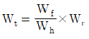
- Wt=Wh+Wf+Wr
- Wt=Wh-Wf-Wr
(정답률: 79%)
67. 버거스 벡터와 전위선이 서로 수직인 전위는?
- 단위전위
- 혼합전위
- 나사전위
- 칼날전위
(정답률: 85%)
68. 인장시험 시 연신율에 대한 설명 중 틀린 것은?
- 시편의 단면적이 작을수록 연신율은 감소한다.
- 시편의 초기 표점거리가 짧을수록 연신율은 감소한다.
- 크기가 다른 시편의 연신율을 비교하기 위해서는 시편의 기하학적 형태가 같도록해야 한다.
- 일반적으로 연신율, 단면감소율, 파괴거동은 재료의 다른 거동으로 취급한다.
(정답률: 75%)
69. 기계적인 잔류응력측정법 중 얇은 판의 표면의 2축 잔류응력을 결정하는데 이용되며 재료의 탄성이 균일하며 잔류응력이 면에 따라서 변하지 않고 두께에 따라서만 변화 한다고 가정하는 측정법은?
- γ- Ray 법
- Bauer - Heyn 방법
- Treuting - READ방법
- Sachs 중공방법
(정답률: 76%)
70. 냉간가공된 금속이 열처리에 의해서 회복과 재결정립 성장이 일어날 때 구동력이 되는 것은?
- 응력
- 변형율
- 표면에너지
- 축적에너지
(정답률: 78%)
71. 다음 중 정수압 압출의 장점이 아닌 것은?
- 마찰효과가 증가한다.
- 균일 변형이 가능하다.
- 압출압력이 감소한다.
- 과잉일이 감소한다.
(정답률: 61%)
72. 딥드로잉(deep drawing)에의해성형한제품에이어링(earing) 결함이 생기는 원인은?
- 전연성
- 이방성
- 등방성
- 탄성여효
(정답률: 83%)
73. 다음 가공법 중에서 전단가공에 해당되지 않는 가공법은?
- 컬링가공
- 트리밍가공
- 세이빙가공
- 슬리팅가공
(정답률: 71%)
74. 금속의 피로강도를 향상시키기 위한 방법 중 틀린 것은?
- 표면을 평활하게 한다.
- 응력을 집중시켜 재료를 강하게 한다.
- 표면경도를 향상시키기 위하여 침탄시킨다.
- 표면층에 압축잔류 응력이 존재하게 한다.
(정답률: 61%)
75. 샤르피 충격시험에서 해머를 올렸을 때의 각도를 α시험편 파단 후의 각도를 β라고 할 때, 충격흡수에너지를 구하는 식은? (단, W는 중량(kgf), R는 펜 듈럼의길이(m)이다.)
- WR(cosα -1)
- WR(cosβ -1)
- WR(cosβ -cosα)
- WR(cosα -cosβ)
(정답률: 87%)
76. 완전전위가 두개의 부분전위로 분해되면 두 부분 전위는 두 부분전위 사이의 반발력과 인력이 균형을 이루는 폭(간격)으로 존재한다. 이 때 두 부분전 위를 확장전위라 부르는데, FCC에서 확장나선전위의 교차슬립에 관한 설명 중 틀린 것은?
- 적층결함 에너지가 클수록 교차슬립이 잘 일어난다.
- Al, Ni등의 금속에서는 교차슬립이 잘 일어난다.
- 황동(brass)에서는 교차슬립이 잘 일어나지 않는다.
- 부분전위 사이의 폭이 클수록 교차슬립이 잘 일어난다.
(정답률: 73%)
77. 그림에서 슬립이 형성되어 인장축에 45°로 루더스띠가 형성되는 구간은?
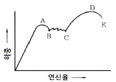
- AB
- BC
- CD
- DE
(정답률: 83%)
78. 탄소강봉에 720kgf/cm2의 인장응력이 작용하고 있을 때 변형률의 값은 0.003이라면 (종)탄성계수 E값은 얼마인가?
- 2.3×105kgf/cm2
- 2.4×106kgf/cm2
- 2.3×107kgf/cm2
- 2.4×108kgf/cm2
(정답률: 66%)
79. 압연작업에서 압하량을 크게하는 조건을 설명한 것 중 틀린 것은?
- 지름이 큰 롤을 사용한다
- 압연재의 온도를 높여준다.
- 압연재를 뒤에서 밀어준다
- 롤의 회전속도를 높인다.
(정답률: 83%)
80. 취성 금속재료의 파괴가 표면조건에 따라 민감하게 변하는 현상은?
- 조폐(joffe) 효과
- 수즈키 (Suzuki) 효과
- 변형률 민감도 효과
- 텍스쳐(texture) 효과
(정답률: 80%)
5과목: 표면공학
81. 고속도금을 하기 위한 방법으로 틀린 것은?
- 금속이온의 농도를 크게한다.
- 확산정수가 작은염을 사용한다.
- 액의온도를 높여 작업한다.
- 액의 교반을 심하게 해준다.
(정답률: 68%)
82. 다음 중 인산염을 환원제로 한 무전해 니켈 도금액의 성분이 아닌 것은?
- 시안화제일구리
- 치아인산소다
- 염화암모늄
- 황산니켈
(정답률: 57%)
83. 플라즈마 CVD에 대한 설명으로 틀린 것은?
- 화학적 기상도금보다 속도가 느리다.
- 폴리머와 같이 고온에서 불안정한 기지 위에 금속코팅이 가능하다.
- 열에너지가 아닌 천이 된 전자에 의하여 반응가스가 활성화 된다.
- 열CVD법에 비하여 기지의 온도가 낮은(300°C 이하) 상태에서 밀착성이 우수한 피막을 얻는다.
(정답률: 67%)
84. 강재의 염욕 열처리시 일반적인 염욕의 구비조건이 아닌 것은?
- 점성이 커야한다.
- 염욕의 용해가 쉬워야 한다.
- 증발 및 휘발성이 적어야 한다.
- 염욕 중의 불순물은 적고 순도가 높아야 한다.
(정답률: 67%)
85. 주사전자현미경에 사용되는 전자총에 대한 설명으로 옳은 것은?
- 물질에 열을 가하여 일함수 이상의 에너지를 제공하면 전자는 고유의 위치로부터 벗어나 공중으로 방출된다.
- 열방사형 전자총을 사용한 주사전자현미경이 전계방사형 전자총을 사용한 것보다 분해능이 뛰어나다.
- 열방사형 전자총은 높은 전계를 가하여 에너지를 공급하여 전자를 방출시킨다.
- 열방사형 전자총의 음극에 사용되는 재료는 일함수 값이 커야한다.
(정답률: 72%)
86. 다음 중 무전해 도금에 필요한 주성분과 보조성분이 아닌 것은?
- 환원제
- 봉공제
- 개량제
- 착화제
(정답률: 65%)
87. 고주파 경화 열처리의 유도전류에 의한 침투깊이를 설명한 것 중 옳은 것은?
- 강재의 고유 저항이 작고 투자율이 클수록 전류의 침투 깊이는 깊어진다.
- 강재의 고유 저항이 작고 전류의 주파수가 높을 수록 침투 깊이는 깊어진다.
- 강재의 투자율이 작고 전류의 주파수가 높을 수록 침투 깊이는 깊어진다.
- 강재의 고유 저항이 크고 주파수가 낮을 수록 침투 깊이는 깊어진다.
(정답률: 61%)
88. 알루미늄의 양극산화로 얻어진 피막의 내식성을 가장 크게 저하시키는 불순물은?
- Cu
- Mn
- Mg
- Fe
(정답률: 58%)
89. Ti 및 Ti 합금의 열처리에 대한 설명으로 틀린 것은?
- 강도를 중가시키기 위해서 용체화 처리와 시효처리를 한다.
- 연성, 치수 및 열적 안정성을 증가시키기 위해서 풀림처리를 한다.
- 응력제거 처리시 냉각을 가속시키기 위하여 유냉이나 수냉을 시용한다.
- 열처리를 통하여 파괴인성, 피로강도 및 고온 크리프강도 등의 성질을 최적화할수 있다.
(정답률: 66%)
90. 용융아연도금의 도금 시 용제가 갖추어야 할 조건에 대한 설명으로 틀린 것은?
- 점도, 표면장력, 융점이 낮아야 한다.
- 용융아연 표면의 산화아연을 제거해 주어야 한다.
- 반응 생성물이 재석출하도록 해야 한다.
- 용융아연 용기에 침지할 때까지 철 표면의 산화를 억제하여야 한다.
(정답률: 69%)
91. 이온도금 중 저온 플라즈마를 이용한 방식이 아닌 것은?
- 활성반응증착 방식
- 고주파방전 방식
- hollow cathode discharge 방식
- clusterionbeamdeposition 방식
(정답률: 72%)
92. 아노다이징(Anodizing) 처리의 주된 목적이 아닌 것은?
- 내식성향상
- 표면착색
- Al2O3피막형성
- 인장강도향상
(정답률: 71%)
93. 연마 시 나타나는 결함에 대한 설명 중 틀린 것은?
- 가벼운 연마 균열의 형상은 구갑상이다.
- 연마균열을 방지하려면 반드시 뜨임처리를 해야한다.
- 연마균열에는 제1종 연마 균열과 제2종 연마 균열이 있다.
- 연마균열은 잔류오스테나이트가 많은 부품을 그라인더로 연삭할 때 나타난다.
(정답률: 65%)
94. 다음 중 진공증착에 의한 피막제품이 아닌 것은?
- 선글라스상의 코팅
- 감광막 코팅
- 반사방지용 코팅
- 플라스틱상의장식 코팅
(정답률: 63%)
95. 투과전자현미경을 사용하여 필름상에 얻은 특정 면상의 회절점들로부터 그 간격을 측정하여 면간거리를 구하고 자한다. 회절점의 사이의 거리(간격)에 미치는 영향을 옳게 설명한 것은?
- Bragg 각도가 클수록 회절점의 사이의 거리는 작아진다.
- 특정 면의 면간거리가 클수록 회전전의 사이의 거리도 커진다.
- 전자빔의 파장이 클수록회절점의 사이의 거리도 커진다.
- 시편과 필름사이의 거리가 클수록 회절점의 사이의 거리는 작아진다.
(정답률: 52%)
96. 강의 담금질성을 판단하는 방법이 아닌 것은?
- 염수분무시험에 의한 방법
- 조미니시험에 의한 방법
- 임계직경에 의한 방법
- 임계냉각속도를 사용하는 방법
(정답률: 66%)
97. Cr계 스테인리스강의 취화 현상에 대한 설명 중 틀린 것은?
- σ 취성을 방지하는 원소는 Al이다.
- 저온취성은 주로 오스테나이트계 강에서 나타난다.
- σ 취성은 800°C 이상으로 가열하여 급냉하면 인성이 회복된다.
- 475°C 취성은 Cr 15% 이상의 강종을 370~540°C 로 장시간 가열하면 취하는 현상이다.
(정답률: 53%)
98. 화학증착(CVD-Chemical Vapor Deposition) 법을 옳게 설명한 것은?
- 피복하고자하는 금속을 증발하여 이온화시켜 피복한다.
- 타겟(target) 재료의 원자를 스퍼터(Sputter) 시켜 마주보는 기판위에 피복한다.
- 금속용액에 기판을 침지하여 화학적으로 치환 도금 한 것이다.
- 가열된 소재에 피복하고 자하는 피막성분을 포함한 원료의 혼합가스를 접촉시켜 증착한다.
(정답률: 67%)
99. 다음 중 파라카이징에 관한 설명으로 틀린 것은?
- 철강의 방청법으로 사용된다.
- 피막은 밀착성 금속 인산염이다.
- 촉진제로 구리염을 사용하는 방법이다.
- 방법에는 처리액을 분사하는 스프레이법이 있다.
(정답률: 62%)
100. 1기압에 해당 되지 않는 것은?
- 760torr
- 76cmHg
- 760mmHg
- 1013Pa
(정답률: 75%)